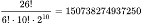

| Homepage | Funzionamento | Enigma nella finzione |
Principio
In linea di puro principio, Enigma può essere considerata come un'estensione del metodo del cifrario di Vigenère munita di disco di Leon Battista Alberti. La differenza principale sta nel fatto che i dischi cifranti sono più di uno, posti fra loro "in cascata", e che manca qui la chiave, detta anche verme, che invece era elemento essenziale nella cifratura di Vigenère.
Struttura
La macchina Enigma aveva l'aspetto di una macchina per scrivere con due tastiere: la prima, inferiore, e la seconda nella quale i tasti erano sostituiti da lettere luminose che si accendevano ogni qualvolta venisse premuto un tasto sulla tastiera effettiva; la sequenza delle lettere che si illuminavano dava il messaggio cifrato (o quello in chiaro, se si batteva il testo cifrato).
Nella versione a tre dischi, il suo funzionamento si basava su tre dischi cablati, detti "rotori", che avevano 26 contatti per lato (uno per ogni lettera dell'alfabeto tedesco). I cablaggi interni dei dischi mettevano in comunicazione stabile ciascuna lettera su un lato con una lettera dell'altro lato. Detti "lato L" e "lato R" i due gruppi di contatti di ogni disco, uno dei contatti del "lato L" del primo disco riceveva la tensione dal deviatore del tasto premuto, la trasferiva a un contatto, predeterminato dal cablaggio, del suo "lato R", il quale "toccava" il corrispondente contatto del secondo disco sul "lato L" del medesimo, e il cablaggio del secondo disco trasferiva la tensione su un contatto predeterminato del suo "lato R" e così al terzo disco. I dischi erano collegati fisicamente da un meccanismo simile a un odometro: il primo disco ruotava di una lettera a ogni pressione di tasto, il secondo ruotava di una lettera ogni volta che il primo compiva un giro e il terzo ruotava di una lettera quando il secondo finiva un giro.
I contatti del "lato R" del terzo e ultimo rotore venivano a toccare gli omologhi di un disco "riflettore", dotato di contatti sul solo "lato L", che, cablato in modo da trasferire la tensione fra contatti diversi del medesimo lato, scambiava il collegamento della lettera del terzo rotore e rispediva indietro il contatto attraverso tutti e tre i rotori: quindi la tensione applicata al contatto della lettera premuta dall'operatore sulla tastiera veniva applicata sul contatto corrispondente del primo rotore e usciva dallo stesso rotore attraverso un altro contatto del medesimo "lato L", diretta ora verso una delle lampadine di Enigma attraverso il deviatore del tasto corrispondente.[8] Grazie al "riflettore" la macchina poteva così funzionare anche come decodificatore, senza intervento specifico alcuno, cioè era necessario, prima di cominciare la decodifica, portare solo rotori e spinotti nella configurazione giornaliera prevista dai cifrari (vedi oltre). Questa caratteristica comportava come conseguenza la "reciprocità" di codifica: se, in un determinato assetto dei rotori (e degli spinotti di cui oltre), la lettera B veniva, ad esempio, cifrata con una F, nel medesimo assetto, premendo il tasto F si codificava quest'ultima con B. Inoltre una lettera non poteva mai venire codificata in sé stessa.
Oltre a questo Enigma poteva essere regolata, per maggior sicurezza, con gli spinotti di un pannello a più prese per scambiare fra loro dieci lettere con altre dieci a scelta prima dell'ingresso nel primo rotore; infine i contatti di ogni rotore da una faccia all'altra potevano venire sfalsati a piacere.
Le disposizioni operative per le unità dotate della macchina Enigma prescrivevano che ogni giorno, per motivi di sicurezza, venisse modificato l'assetto della macchina disponendo collegamenti differenti per gli spinotti del pannello, posizionamenti reciproci diversi per i tre rotori, assetto iniziale diverso (lettera da cui partire per la prima codifica) di ciascuno di essi. Le informazioni relative erano contenute in un cifrario-calendario distribuito a ogni unità dotata di macchina Enigma.

Della cifrante Enigma esisteva anche la versione a quattro dischi rotori (Enigma M4).
Regolazioni
Prima di usare la macchina l'operatore addetto alla cifratura del messaggio doveva:
A questo punto la macchina era pronta a cifrare (o decifrare) un messaggio.
Cifratura (e decifrazione) del messaggio
L'operatore riceveva il messaggio scritto. Via via che premeva sulla tastiera effettiva una lettera del medesimo, sulla "tastiera luminosa" compariva la corrispondente lettera cifrata e l'operatore (o chi per esso vicino a lui) la registrava su un foglio. Al termine della cifratura il foglio sul quale era stato scritto il messaggio cifrato veniva consegnato al marconista che lo trasmetteva (via radio o via filo, a seconda del mezzo trasmissivo da usare al momento). Analogamente si procedeva in decrittazione: l'operatore di Enigma riceveva dal marconista o da chi per lui il messaggio cifrato, lo "batteva" sulla tastiera effettiva e le lettere in chiaro comparivano via via sulla "tastiera luminosa".
Calcolo delle possibili combinazioni di cifratura
Nella versione tipica della macchina, si devono scegliere 3 rotori tra 5 disponibili. Per il primo si hanno 5 opzioni, dunque 4 e infine 3: il numero di combinazioni è: Ogni rotore ha 26 posizioni iniziali, per cui il numero di posizioni di partenza è: Le macchine di cifratura militare disponevano inoltre di un pannello di controllo, che permetteva di scambiare 13 coppie di lettere collegandole con dei cavi. Dal momento che tipicamente venivano scambiate 10 coppie di lettere con 10 cavi, il numero di combinazioni di collegamento possibili è il più grande, ovvero 150 738 274 937 250. Infatti, 26 lettere possono essere combinate in 26! modi. Da queste togliamo le 3 coppie di lettere che non venivano tipicamente usate, dividendo per (3 × 2)!. Non importa l'ordine delle 10 coppie restanti, per cui si divide per 10!, e non importa l'ordine di ciascuna coppia (A B = B A): essendoci 10 coppie, dividiamo per 2 dieci volte, ovvero 210. 
Moltiplicando i tre risultati si ottengono 158 962 555 217 826 350 000 combinazioni di partenza